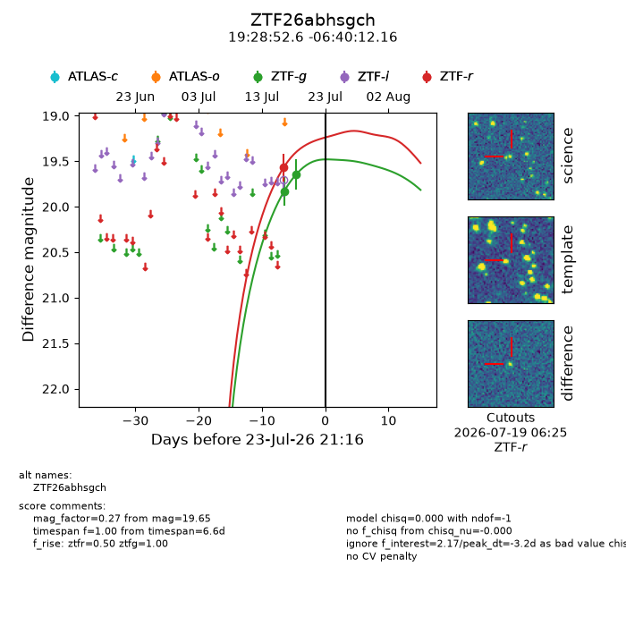
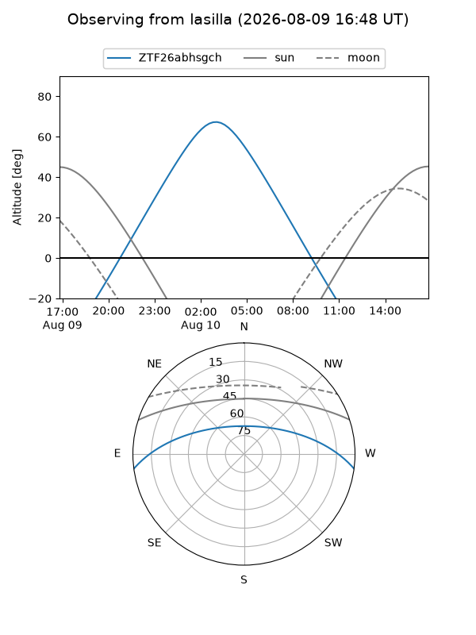
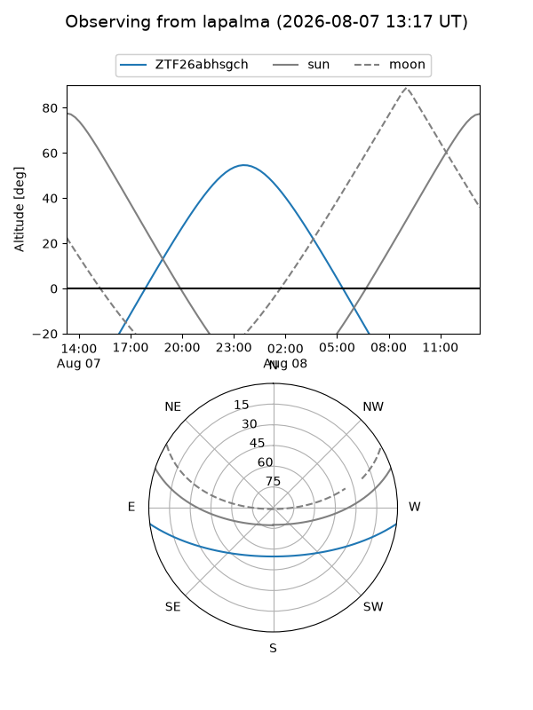
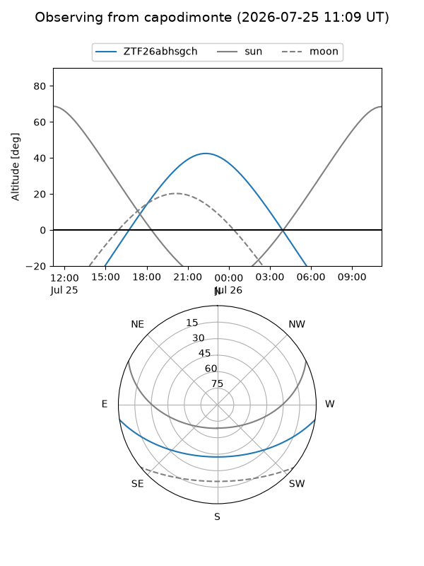
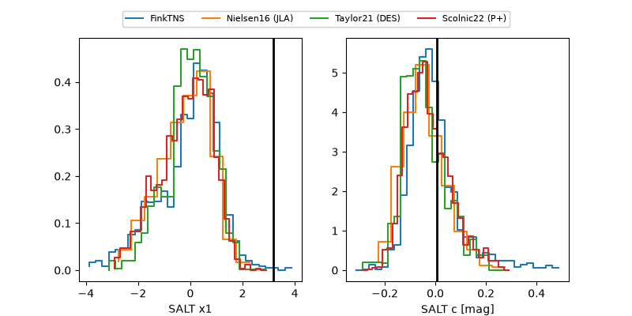

ZTF26abhsgch
Target ZTF26abhsgch at 2026-07-23 21:19
Aliases and brokers:
FINK-ZTF: ztf.fink-portal.org/ZTF26abhsgch
Lasair-ZTF: lasair-ztf.lsst.ac.uk/objects/ZTF26abhsgch
ALeRCE-ZTF: alerce.online/object/ZTF26abhsgch
Direct TNS query: direct search
alt names
ZTF26abhsgch (ztf,fink_ztf)
Coordinates:
equatorial (ra, dec) = 292.2190,-6.67004
equatorial (HMS+DMS) = 19:28:52.57,-06:40:12.16
galactic (l, b) = (31.1950,-11.34534)
Flags:
peak dt: -3.2
Photometry:
last ztfg=19.65, ztfr=19.57
2 ztfg, 1 ztfr detections
Lightcurve

Visibility



Additional plots
